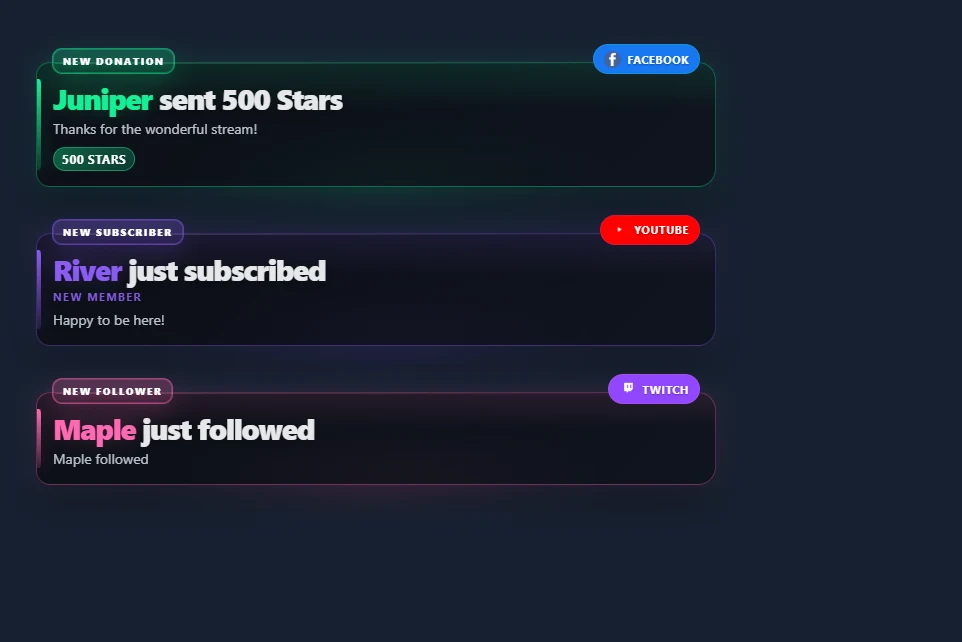
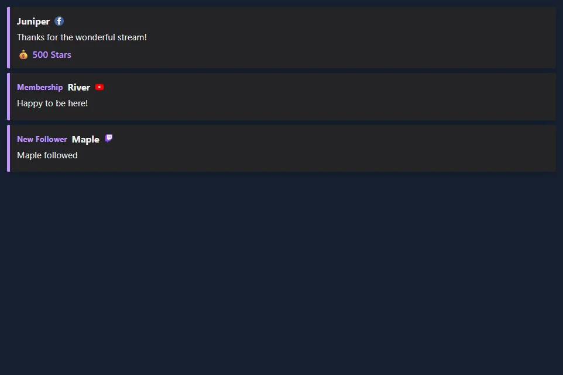

มองเห็นการแจ้งเตือนสามรายการล่าสุด
- เปิด แจ้งเตือนหลายแพลตฟอร์ม → หลายการแจ้งเตือน / รายการเหตุการณ์.
- เลือก 3 รายการล่าสุด — โปร่งใส. ช่วยให้สามารถซ้อนการ์ดขนาดกะทัดรัดและ เก็บการแจ้งเตือนไว้จนกว่าจะถูกแทนที่ เปลี่ยน การแจ้งเตือนที่มองเห็นได้ เพื่อการนับที่แตกต่างกัน
- เลือก ดูตัวอย่างเหตุการณ์ เพื่อดูกิจกรรมสมมุติบน Twitch, YouTube และ Facebook การแสดงตัวอย่างนี้ไม่ได้เชื่อมต่อกับสตรีมของคุณ
- คัดลอกลิงก์กล่องแจ้งเตือนแบบหลายสตรีม ใน OBS Studio หรือ Streamlabs Desktop ให้เพิ่มไฟล์ แหล่งเบราว์เซอร์ (Browser Source) ไปที่ฉากของคุณแล้ววางลิงก์ เริ่มต้นด้วยผืนผ้าใบขนาด 900 × 700 และปรับขนาดให้พอดีกับการ์ดของคุณ
- เชื่อมต่อแหล่งที่มาของเหตุการณ์ของคุณใน SSN กิจกรรมใหม่เข้าร่วมสแต็กและแทนที่การ์ดเก่าที่สุดที่ไม่ได้ปักหมุด


เปิดกองตัวอย่าง · เรียกดูสไตล์การแจ้งเตือนแบบเรียงซ้อน
ปิด เก็บการแจ้งเตือนไว้จนกว่าจะถูกแทนที่ เพื่อให้การ์ดแต่ละใบหมดอายุหลังจากระยะเวลาการแสดงผลที่กำหนดไว้ การซ้อนจะแสดงการมาถึงที่มีสิทธิ์ทันที คิวการแจ้งเตือนครั้งเดียวจะใช้เมื่อปิดการเรียงซ้อน เสียงจะเล่นเมื่อมีการแจ้งเตือนใหม่ วิดีโอเล่นต่อเนื่องหนึ่งครั้ง และพื้นที่สื่อจะซ่อนหลังจากระยะเวลาการแสดงผลขณะที่ข้อความยังคงมองเห็นได้
ใช้รายการเหตุการณ์ของผู้ชมที่มีขนาดกะทัดรัด
เปิด กิจกรรม / เหตุการณ์ แล้วเลือก 3 รายการล่าสุด — โปร่งใส. การตั้งค่าผู้ชมล่วงหน้าจะซ่อนส่วนหัว การประทับเวลา ข้อมูลเมตา คลิกเพื่อแสดง จำนวน ประกาศโฆษณา และกิจกรรมทั่วไป โดยจะติดตาม การสมัครสมาชิก การสนับสนุนแบบชำระเงิน และหมวดหมู่กิจกรรมอื่นๆ ที่เลือก ปิดค่าที่ตั้งล่วงหน้าหากคุณต้องการปรับแต่งรายการที่ซ่อนไว้ทีละรายการ


ใช้ เลือกเหตุการณ์ที่จะปรากฏ เพื่อกรองหมวดหมู่และ แหล่งข้อมูลที่จะติดตาม เพื่อกรองแพลตฟอร์ม ชุด ลบกิจกรรมหลังจากนั้น เป็นศูนย์หรือปล่อยว่างไว้เพื่อเก็บแถวไว้จนกว่าจะถูกแทนที่ ดูตัวอย่างรายการผู้ชม.
เลือกสไตล์และเค้าโครง
เรียกดูสไตล์รายการเหตุการณ์ทั้งหมด. การ์ดแกลเลอรีแต่ละใบมีภาพหน้าจอและลิงก์ที่ใช้เซสชันของคุณ Multi-Alerts รองรับอาร์ตเวิร์กที่มีอยู่และธีมการแจ้งเตือนเป็นสแต็ก รวมถึง Broadcast, Outlined, Rounded pills และ Neon treatments
| การจัดวาง | ใช้สำหรับ |
|---|---|
| รายการ | กิจกรรมล่าสุดหลายรายการ ใหม่ที่สุดที่ด้านบนหรือด้านล่าง |
| การ์ดแนวนอน | เรียงกันเป็นแถวข้ามฉาก กำหนดความกว้างของแถวให้พอดีกับพื้นที่ว่าง |
| สลับเหตุการณ์ | เหตุการณ์ที่มองเห็นได้ครั้งละหนึ่งเหตุการณ์ โดยวนไปตามเหตุการณ์ที่เก็บไว้ |
| ล่าสุดตามหมวดหมู่ | กิจกรรมใหม่ล่าสุดในแต่ละหมวดหมู่ เพิ่มขีดจำกัดที่มองเห็นได้เพื่อรวมหมวดหมู่เพิ่มเติม |
| แถบเลื่อน | แถบเคลื่อนไหวของเหตุการณ์ที่เก็บรักษาไว้ วงจรการเลื่อนจะควบคุมความเร็ว |
ปรับการจัดตำแหน่งข้อความ การตัด ความกว้างของแถว ระยะห่าง ความทึบของพื้นหลัง และสีที่ถูกเน้น ความทึบของพื้นหลังจะแทนที่การไล่ระดับสีของการ์ดด้วยพื้นหลังโปร่งแสงทึบ แอนิเมชั่นรายการสามารถใช้สไตล์เริ่มต้น สไลด์ เฟด หรือไม่มีก็ได้ ภาพเคลื่อนไหวที่ออกอาจจางลงหรือเลื่อนการ์ดที่ออกไป การตั้งค่าการลดการเคลื่อนไหวจะปิดใช้งานการเคลื่อนไหว
ประวัติและการควบคุม
เปิดใช้ จดจำเหตุการณ์ที่มองเห็นได้หลังจากการรีเฟรช เพื่อให้บอร์ดมีประชากรเมื่อมีการรีโหลดแหล่งที่มาของเบราว์เซอร์ ประวัติจะอยู่ในเบราว์เซอร์ เซสชัน และชื่อบอร์ดนั้น OBS และเบราว์เซอร์ทั่วไปของคุณมีพื้นที่เก็บข้อมูลแยกต่างหาก การตั้งค่าการเก็บรักษาอยู่ระหว่าง 1 ถึง 168 ชั่วโมง แถวที่กู้คืนจะใช้ตัวกรองปัจจุบันและไม่เล่นเสียงซ้ำหรือทริกเกอร์การทำงานอัตโนมัติ ในการแจ้งเตือนหลายรายการ ตัวเลือกนี้จำเป็นต้องมีการซ้อน
ให้ฉากที่แยกจากกันแตกต่างกัน ชื่อบอร์ด. คำสั่งป๊อปอัพกำหนดเป้าหมายชื่อบอร์ดและพื้นผิวที่เกี่ยวข้อง คำสั่งที่ส่งไปยังโอเวอร์เลย์ที่ไม่ได้เชื่อมต่อไม่ใช่การเปลี่ยนแปลงสถานะที่บันทึกไว้ หยุดชั่วคราวเก็บการมาถึงใหม่ในบัฟเฟอร์มากถึง 500 เหตุการณ์สำหรับสแต็กและฟีด ประวัติย่อจะแสดงขึ้นมา หากบัฟเฟอร์นั้นเต็ม เหตุการณ์การรอคอยที่เก่าที่สุดจะถูกแทนที่ โหมดการแจ้งเตือนครั้งเดียวใช้ขีดจำกัดคิวที่กำหนดค่าไว้
พิน สลับพินของการ์ดใหม่ล่าสุด การ์ดที่ปักหมุดจะใช้ช่องที่มองเห็นได้ หากทุกช่องถูกปักหมุด ให้เลิกปักหมุดการ์ดเพื่อยอมรับกิจกรรมใหม่ นำออก ลบการ์ดใหม่ล่าสุด ล้าง ลบกิจกรรมที่มองเห็นได้ กิจกรรมรอ และประวัติที่บันทึกไว้ของบอร์ดนั้น การแจ้งเตือนหลายรายการยังมีการข้าม ปิดเสียง เปิดเสียง และเล่นซ้ำ การเล่นซ้ำเป็นการกระทำที่แสดง ไม่ใช่การบริจาคใหม่หรือทริกเกอร์โฟลว์เหตุการณ์
สำหรับแดชบอร์ดเหตุการณ์ส่วนตัว ให้เปิดใช้งาน แสดงปุ่มตัวดำเนินการ เพื่อปักหมุดหรือลบแต่ละแถว ปล่อยให้ตัวเลือกนี้ปิดอยู่ในแหล่งที่มาของเบราว์เซอร์ผู้ชม
เชื่อมต่อกิจกรรมที่คุณต้องการแสดง
โอเวอร์เลย์ทั้งสองใช้เหตุการณ์ที่แหล่งที่มา SSN ของคุณส่งมา สไตล์โอเวอร์เลย์ไม่ได้เพิ่มการอนุญาตแพลตฟอร์มหรือการสมัครสมาชิกกิจกรรมใหม่
| แหล่งข้อมูล | การตั้งค่าและความครอบคลุมของเหตุการณ์ |
|---|---|
| Twitch | ใช้ Twitch EventSub สำหรับการติดตาม การสมัครสมาชิก ของขวัญ การเชียร์ และการจู่โจมที่บัญชีของคุณสามารถเข้าถึงได้ การจับภาพแบบแชทเท่านั้นไม่ได้แทนที่ EventSub |
| การจับภาพ Facebook มาตรฐานสามารถเปลี่ยนการบริจาคดาวที่มองเห็นได้ให้เป็นแถวสนับสนุนที่ต้องชำระเงิน การจับภาพแชท Facebook API ไม่ได้ระบุจำนวนดาว สำหรับการติดตามและการสมัครรับข้อมูลของผู้สนับสนุน ให้ใช้ผู้ให้บริการเหตุการณ์ที่ส่งประกาศเหล่านั้นไปยัง SSN การจับภาพแชทบน Facebook เพียงอย่างเดียวไม่ได้จัดเตรียมไว้ให้ | |
| YouTube | การเป็นสมาชิก ของขวัญ Super Chats Super Stickers และ Jewels ขึ้นอยู่กับโหมดจับภาพที่เลือก ประกาศสมาชิกแบบสาธารณะจำเป็นต้องมีเส้นทาง API ดูสิ ความเข้ากันได้ของเหตุการณ์. |
| เตะและติ๊กต๊อก | ใช้แหล่งที่มาที่สามารถจัดกิจกรรมได้สำหรับการติดตาม การสมัครสมาชิก หรือของขวัญ เลือกหมวดหมู่กิจกรรมที่คุณต้องการแสดง ไลค์และเข้าร่วมสามารถซ่อนได้ |
| Streamlabs และ StreamElements | SSN สามารถบันทึกฟีดกิจกรรมของผู้ให้บริการที่มีอยู่ได้ เชื่อมต่อผู้ให้บริการใน SSN และให้แหล่งที่มาใช้งานได้ เหตุการณ์ที่พร้อมใช้งานขึ้นอยู่กับการเชื่อมต่อของผู้ให้บริการและโหมดแหล่งที่มา คุณสามารถใช้การแสดงผลของ SSN ในขณะที่ยังคงรักษาผู้ให้บริการสำหรับกิจกรรมหรือเคล็ดลับไว้ได้ |
| แหล่งที่มา SSN อื่นๆ | จำนวนการบริจาคและการติดตามที่ได้รับการยอมรับ กิจกรรมการเป็นสมาชิก ของขวัญ และการจู่โจมสามารถใช้จอแสดงผลเดียวกันได้ ดูสิ การอ้างอิงเหตุการณ์ สำหรับฟิลด์เฉพาะแหล่งที่มาและการดำเนินการที่รองรับ |
หากไม่มีเหตุการณ์จริง ให้ตรวจสอบก่อนว่าปรากฏในฟีดกิจกรรมของ SSN หรือไม่ ตรวจสอบการเชื่อมต่อต้นทางและการอนุญาตเหตุการณ์หากไม่มีอยู่ ตรวจสอบตัวกรองซ้อนทับและจำนวนขั้นต่ำหากมี
มาจาก Streamlabs หรือ StreamElements
สำหรับลักษณะการทำงานที่มองเห็นได้ตลอดเวลาของรายการกิจกรรม Streamlabs ให้ใช้ แสดงการแจ้งเตือนหลายรายการ + เก็บการแจ้งเตือนไว้จนกว่าจะถูกแทนที่ ในการแจ้งเตือนหลายรายการ หรือผู้ชมที่กำหนดไว้ล่วงหน้าในกิจกรรม การแจ้งเตือนที่มองเห็นได้ / เหตุการณ์สูงสุด ตั้งค่าการนับ ตัวเลือกประวัติจะกู้คืนการ์ดที่มองเห็นล่าสุดในเบราว์เซอร์เดียวกัน ใช้ตัวกรองหมวดหมู่และการควบคุมค่าต่ำสุดเพื่อเลือกการสนับสนุนที่จะปรากฏ
คุณสามารถเพิ่มลิงก์ของ SSN เป็นแหล่งที่มาของเบราว์เซอร์ใน OBS หรือ Streamlabs Desktop ได้โดยตรง ไม่จำเป็นต้องมีท่าเรือโอเปอเรเตอร์ SSN ใช้สไตล์ SSN จากแกลเลอรี จากนั้นปรับสีและระยะห่างให้เหมาะกับฉากของคุณ